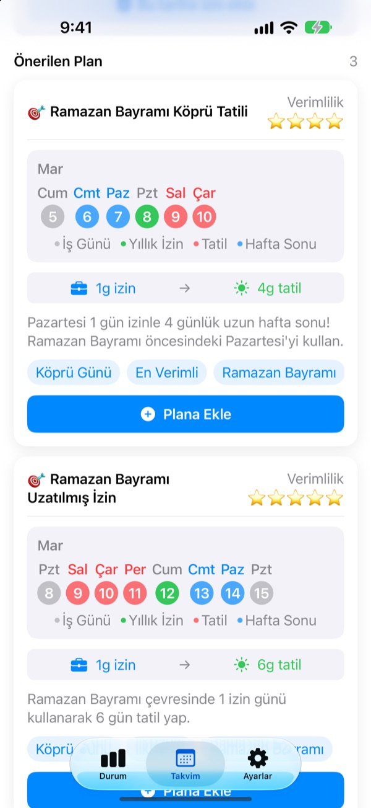
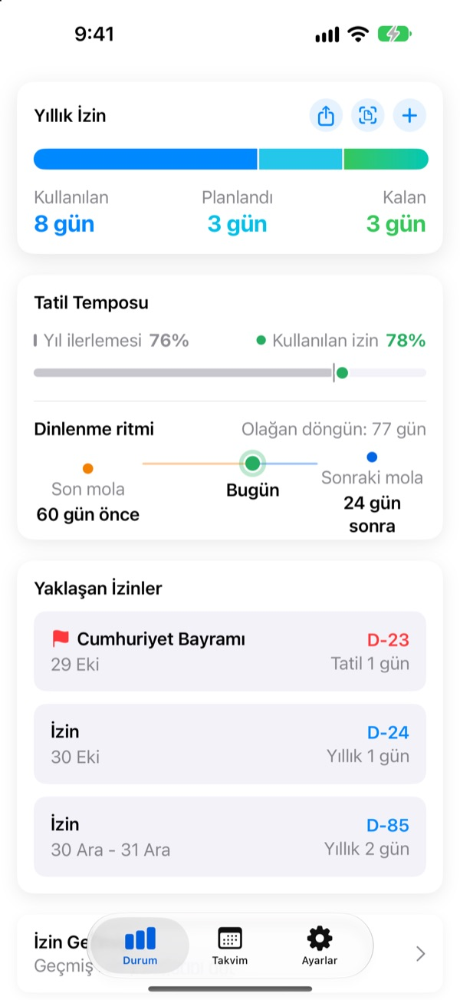
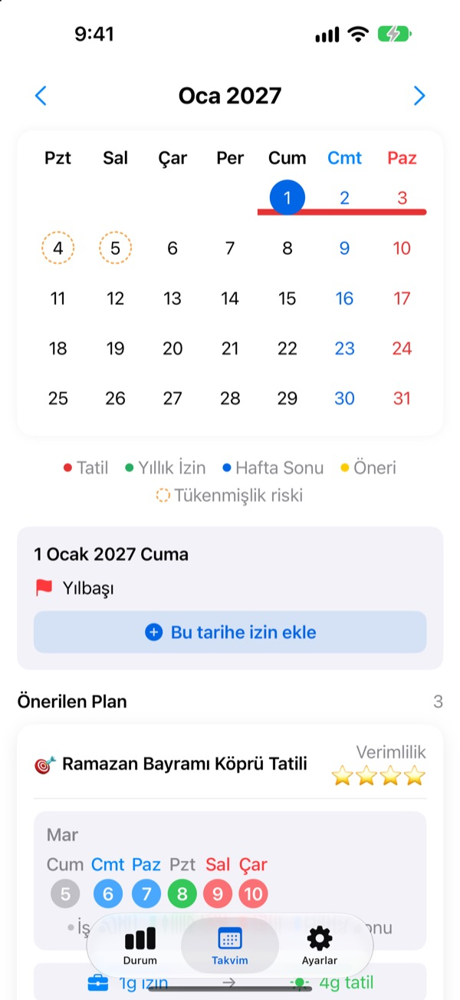
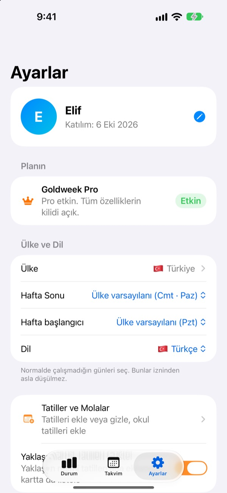

Az izin günü,
uzun tatil
Goldweek resmî tatilleri hafta sonlarıyla birleştirir ve en uzun tatili yapmak için hangi günler izin alman gerektiğini tam olarak gösterir. Takvimi sayfa sayfa çevirip saymaya son.
İndirmesi ücretsiz. İzin takibi ve öneriler ücretsiz kalır.

İznin seni ne kadar götürür?
Kaç gün izin alabileceğini seç. Yaklaşan tatillerin etrafında bu günlerle yapabileceğin en uzun tatilleri gör.
Takvimde gün saymaktan yoruldun mu?
Perşembe tatil, cuma izin mi alsan? Yoksa günü gelecek ayki uzun hafta sonuna mı saklasan? Yeterince sayfa çevirince rastgele bir gün izin alırsın, aralıkta da kalan izinler yanıp gider. Goldweek hesabı senin yerine yapar ve iznini en uzağa taşıyan günleri gösterir.
İznin tek bakışta
Toplam, kullanılan ve kalan izin tek ekranda. Yanında yılın ne kadarının geçtiğini ve ne kadar izin kullandığını görürsün; fazla biriktirip biriktirmediğini hemen anlarsın.
Kalan günlerin ve yaklaşan izinlerin ana ekrandaki widget’ta görünür.

İzni doğrudan takvime ekle
Resmî tatiller, izinler ve önerilen köprü günleri takvimde renkli görünür. İzin eklemek ya da düzenlemek için bir tarihe dokun; yarım gün, çeyrek gün ve saatlik izin de olur.
Geçmiş izinlerini İK ekranının fotoğrafından tek seferde aktarabilirsin.

Senin ülken, senin çalışma düzenin
Türkiye’den Avrupa’ya, Asya’dan Amerika’ya 42 ülkenin resmî tatilleri. Tatillerin bölgeye göre değiştiği yerlerde kendi bölgeni seçersin. Ülken listede yok mu? Kendi tatillerini ekle.
Hafta sonu günlerini, haftanın ilk gününü ve tam zamanlı, yarı zamanlı ya da vardiyalı çalıştığını da ayarlayabilirsin.

Üç adımda başla
- 1
Nerede çalıştığını söyle
İlk açılışta ülkeni ve yılda kaç gün iznin olduğunu seç.
- 2
Bir öneri seç
Takvim sekmesinde önerilen tatiller var. Beğendiklerini ekle.
- 3
İzinlerini kaydet
Bir tarihe dokun ya da geçmiş izinleri fotoğraftan aktar.
Nasıl hesaplanır
- Tam gün
- Bakiyeden 1 gün
- Yarım gün
- 0,5 gün
- Çeyrek gün
- 0,25 gün
- Saatlik
- O günkü çalışma saatlerine göre
- Hastalık, mazeret izni, iş seyahati
- Yıllık izinden düşülmez
- Bonus İzin
- Fazla mesai karşılığı gibi ek izinler, son kullanma tarihiyle ayrı tutulur (Pro)
Yıllık izin gün sayını ve izin yılının başladığı ayı Ayarlar’dan istediğin zaman değiştirebilirsin.
İyi dinlenmek ücretsiz. Planlamayı Plus ve Pro üstlenir.
Ücretsiz
- Tam, yarım, çeyrek gün ve saatlik izinler ile kalan izin
- 42 ülkenin resmî tatilleri, kendi tatillerin ve okul tatilleri
- Bu yılın tüm önerilerini gör, 3 tanesini ekle
- Dinlenme aralığı ipuçları, hatırlatmalar ve widget
- Fotoğraftan izin ekleme
- iCloud yedekleme ve aileyle paylaşılan takvim
Plus ve Pro
- Plus: Optimum yıllık plan
- Plus: Sınırsız öneri, geçen ve gelecek yılın önerileri dahil
- Plus: İzinleri Takvim uygulamasına gönder
- Pro: Plus’taki her şey, Bonus İzin, türe göre yıllık sınır ve devir
- Pro: Okul takvimi içe aktarma ve takvimi otomatik algılama
- Pro: Birlikte tatil ve aile yıl dönümleri
Her seviye yıllık abonelik ya da tek seferlik ömür boyu satın alma olarak sunulur.
Yıllık abonelikler, dönem bitmeden en az 24 saat önce kapatılmazsa otomatik yenilenir. Ayarlar > Apple Hesabı > Abonelikler bölümünden istediğin zaman yönetebilirsin.
Sık sorulan sorular
İzin bakiyem doğru görünmüyor.
Ayarlar’da izin yılının başladığı ayı ve toplam yıllık izin gününü kontrol et. Yarım gün (0,5) ve çeyrek gün (0,25) otomatik düşülür; hastalık, mazeret izni ya da iş seyahati gibi izinden sayılmayan türler bakiyeyi değiştirmez. Hâlâ tutmuyorsa bize e-posta gönder.
İznim takvimde görünmüyor.
İptal edilen izinler takvimde gösterilmez. Kaydın durumunu İzin Yönetimi’nde kontrol et. En son sürüme güncellemek de işe yarayabilir.
Bonus İzin nasıl eklenir?
İzin Yönetimi’ni açmak için Durum sekmesinde + simgesine dokun ve alttaki Bonus İzin bölümünü kullan. Türünü (fazla mesai izni, ödül izni, yenilenme izni…), gün sayısını ve istersen son kullanma tarihini gir. Bonus İzin, normal yıllık izinden ayrı tutulur.
Ödeme yaptım ama hiçbir şey açılmadı.
Ayarlar sekmesinin altındaki Satın Alımı Geri Yükle’ye dokun. Satın alım, App Store’da oturum açtığın Apple Hesabı ile geri yüklenir. İşe yaramazsa bize e-posta gönder.
Uygulamayı silersem verilerim gider mi?
Veriler cihazda saklanır, bu yüzden uygulamayı silersen kalıcı olarak gider. Daha sonra geri yükleyebileceğin bir kopya için iCloud Yedekleme’yi aç.
Kendi tatillerimi ekleyebilir veya bazılarını gizleyebilir miyim?
Evet. Ayarlar’daki Tatiller ve Molalar bölümünden kendi tatillerini ekleyebilir ya da varsayılan tatilleri gizleyebilirsin.
Hangi ülkeler destekleniyor?
Goldweek 42 ülkenin resmî tatillerini içerir. Ayarlar’dan ülkeni (tatillerin bölgeye göre değiştiği yerlerde bölgeni de) seç, takvim hemen güncellenir. Ülken yoksa tatilleri kendin ekleyebilir ya da uygulamadan geri bildirim göndererek destek isteyebilirsin.
Verilerim nerede saklanıyor?
Girdiğin her şey cihazında ya da kendi iCloud’unda kalır. Biz yalnızca anonim kullanım istatistiklerini, anonim çökme raporlarını ve kendi isteğinle gönderdiğin geri bildirimleri alırız.
Yukarıda yanıtı olmayan her şey, fikirler ya da hatalar için leeo@kakao.com adresine yaz. Genellikle bir iki iş günü içinde yanıt veririz.